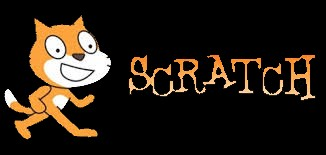

SCRATCH:

Bonjour;
voici ma page je mettrais un nom de jeu scratch avec une photo, un nouveau jeu scratch serra rajouté chaque mois minimun.
Si vous souhaitez télécharger scratch vous devrez clic
ICI
.
Si vous souhaitez avoir le jeu vous devrais clic sur le mot "ICI" en dessous du nom du jeu est télécharger.

nom du jeu:
STAR WARS
Clic
ICI
pour telecharger le jeu.
Si vous avez des idées de jeu dite le moi par
email
.
roro.a
echo "# test.github.io" >> README.md
git init
git add README.md
git commit -m "first commit"
git remote add origin https://github.com/roro26/test.github.io.git
git push -u origin master